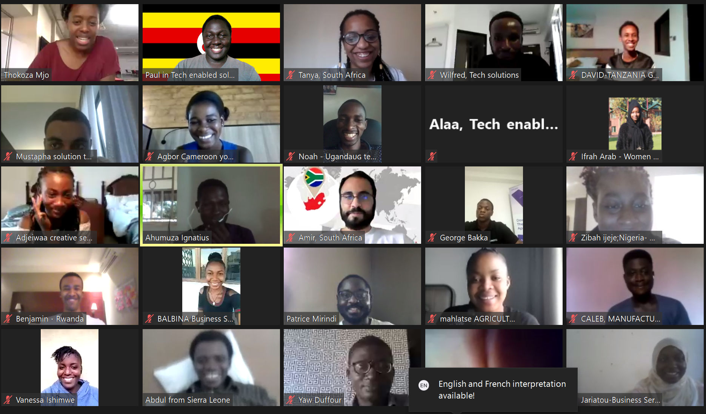

A KATUMBA SPECIAL

Katumba Jonathan Paul
paulkatumba@minute5.ug
- KATUMBA JONATHAN PAUL FOR THE ANZISHA PRIZE 2020| ANZISHA EFFECT
-
Hello,

After the Anzisha prize bootcamp, so many people asked me about the experience and I felt like this is something that I could document and share with everyone. So I have decided to write this article to simply let everyone know how my Anzisha experience was . The Anzisha prize is a community that celebrates and supports young entrprenuers running businesses with high impact in their countries, employing their peers and paving the way for others to do the same. I’m so honoured and excited to be an Anzisha fellow of the 2020 cohort.For me,Anzisha is like amusement park for entrepreneurs.
I happened to be an Anzisha prize finalists this year and it is exciting to join the Anzisha community. First of all, I think the 2020 cohort is the most interesting cohort. We are running extremely impactful businesses that are employing many youths. I was really excited to be interacting with the entrepreneurs just like me having the same path and same challenges. For me, my summarized experience of the Anzisha bootcamp and the community is like an amusement park for entrepreneurs.
The bootcamp brought together 20 African entrepreneurs from different countries in all the African regions. For the first five days, we did the bootcamp from our homes, so we connected online from 10AM SAST till 5PM SAST. The first day was hard, trying to get everyone’s business right and get comfortable with everyone and since it was virtual, getting to know someone even gets difficult. Networking is better done in person, physically. Anyway, so we were welcomed to the community and we were shown lots of love. We had a number of different sessions, such as the I screwed up session where we learnt from failures of previous fellows and how best we could bounce back, the wellness and check-in sessions which were my personal best because they helped me improve as a person. Thanks to those sessions I know relax without feeling guilty for relaxing and by the time I’m back to work, I feel more energized.
I was so honoured to meet extremely motivated young African entrepreneurs
During the first five days, we had to start preparing for the pitch with help from our peer hosts (Anzisha fellows from other cohorts) and even our Anzisha buddies. The bootcamp ran smoothly as all activities were done in time. I remember during my-story sessions where fellows told us about their entrepreneurial journey, I had the chance to hear from different entrepreneurs how they started their journey and what motivated to start their businesses. Having this kind of sharing meant so much to me because with a community you can share with, they can always assist in ways you can’t even believe. And this is also evident when it came to preparing for the pitch, the more you shared with your fellow Anzisha finalist, the more they helped refine your pitch. For instance, my other Ugandan finalist gave me a powerful statement to use in my pitch which was able to communicate more about the problem we are solving as Minute5.
Anyway, after the first five days, we were checked into the hotel the Anzisha Prize booked us in. This only got more interesting, we lived like bosses me and Hamidu😅😅😅, but we had a task ahead of us, the final pitch. So we prepared for the pitches on Monday and Hamidu had he’s pitch first since I had to pitch on the next day. One thing for sure you could see is the passion when everyone is pitching their business. You can see that the African problems we are solving are even bigger than us. Imagine solving the challenge of plastic pollution through recycling, imagine the work that goes into skilling developers to become ready for the job market, imagine lighting Ghana homes with emergency led bulbs that are mosquito repellant.Anyway, after the first five days, we were checked into the hotel the Anzisha Prize booked us in. This only got more interesting, we lived like bosses me and Hamidu😅😅😅, but we had a task ahead of us, the final pitch. So we prepared for the pitches on Monday and Hamidu had he’s pitch first since I had to pitch on the next day. One thing for sure you could see is the passion when everyone is pitching their business. You can see that the African problems we are solving are even bigger than us. Imagine solving the challenge of plastic pollution through recycling, imagine the work that goes into skilling developers to become ready for the job market, imagine lighting Ghana homes with emergency led bulbs that are mosquito repellant.
I was very inspired by everyone who pitched that day. Anyone, just like as they say, work without play makes Jack a dull boy, that Tuesday night, we had an online party. Unfortunately I didn’t attend because I was so exhausted however, who thought entrepreneurs don’t party. I was informed that it was lit party everyone brought out their skills and their abilities. Anyway, I had a chance to redeem myself because the next night we had talent show. Yeap, we entrepreneurs also have talents and can shock. From singing, to Hamidu Jackson😅😅😅😅, to art, cooking. This cohort can never bore itself. Personally, I feel like I should have met everyone physically but some disease had other plans.
Ohh yes, we also had the Amazing race, and guess what, we had to sing the national Anthem with a random person on the streets. Lucky for me, I found someone but as people were moving to the third stage, my partner and I had already reached the last stage. Now this is where we were beaten, my partner couldn’t do the challenge because of the situation that was in her country and this is the moment I knew, we had lost it all 😅😅😅😅, we literally had the ball in our hands, we eyed victory from a distance, but when we reached the end zone, the umpire decided to remove the hoop. Anyway, we came in third, but with the excitement I had, I felt like I won.
Anyway, so yeah, we then concluded the bootcamp by meeting a number of other fellows from different cohorts even upto having personally one on one sessions for mentorship. The bootcamp end when everyone had just started to know each other well, you can imagine how hard it is to leave an amusement park. It was a good two weeks to know each other well and understand different people and their work and culture. I can’t wait to visit Matina in Madagascar, catch a bus to see Benjamin in Rwanda and Wilfred in Kenya. The kind of friendship created is a very strong and instrumental to us. We had the Award ceremony and we had a good time. Congratulations to Alaa, Matina and Mohammed and all 2020 finalists, Abdel, Mustapha, Wilfred, Benjamin, Joshua, Mahlatse, Frida, Omonlola, Hamidu, Adjeiwaa, Olivia, Ian, Zibah, Mahlatse, Sally and David. I hope to create synergies with you and your company as we grow African businesses. Note, African entrepreneurs must succeed and let us support each other to get to this goal.
Published on 23th November, 2020.